These are my slides for the presentation Taint Mode for Python via a Library I gave in OWASP App Sec 2010 in Stockholm last 24th of June. The organizers will be publishing some media (photos and video) from the talk.
This presentation is called A Taint Mode for Python via a Library and is a joint work of me, Juan José Conti and Alejandro Russo.
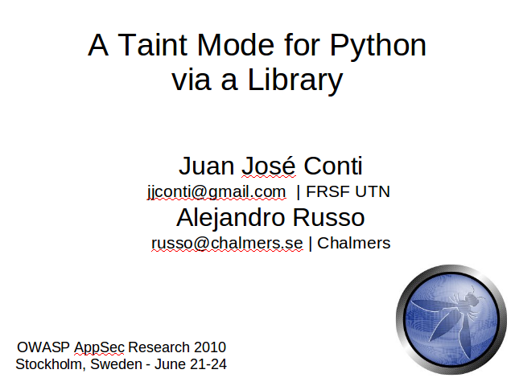
Today most of the computer attacks are produced against web applications rather than to desktop applications (which requires knowledge of an specific domain) or to the operating system (which requires low level knowledge).
Attack web sites is much more easier.
The consequences of these kind of attacks can vary, for example:
Impersonate: when an attacker stills the identity of a user in in web site.
Compromise confidential data: when an unauthorized user reaches data he wasn't suppose to reach.
Denial of Service: when a resource is not available to its genuine users.
And
Data destruction.
So the attacker goal is to craft input data to gain some control over certain operations. It's important to mention here that the attacker has no control over the executed code, just over the input data.
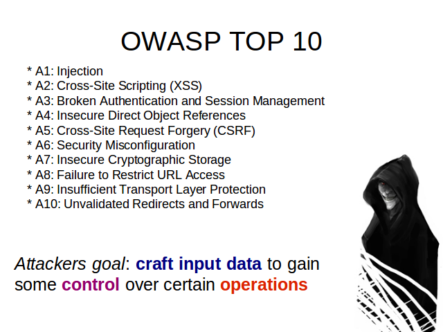
These are examples of different sensitive sinks an attacker could attack.
The attacker can manipulate the data that will be use to produce an SQL query and obtain some secret information.
…make an operating system injection and execute arbitrary commands on it
or
.... exploit an XSS vulnerability and stole a user's credentials in some web site.
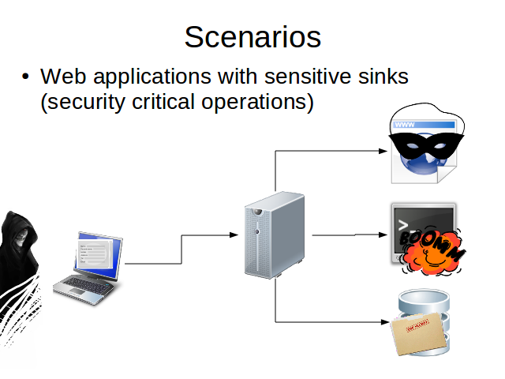
A way to face these problems is using Taint Analysis. Usually enforcesd
Data received from a client is considerer tainted. We can't trust in data from the outside because we don't know who generate it. May be a real user, maybe an attacker or even an attacker program.
Tainted data can be untainted by a sanitization process.
We don't want tainted data to reach sensitive sinks.
In the image you can see different sanitization processes represented with different colors. This means that data that will finish in different sinks needs to be properly cleaned for that kind of sink.
It's not the same the function you'll use to protect a page renderer against XSS than the DB against SQLI.
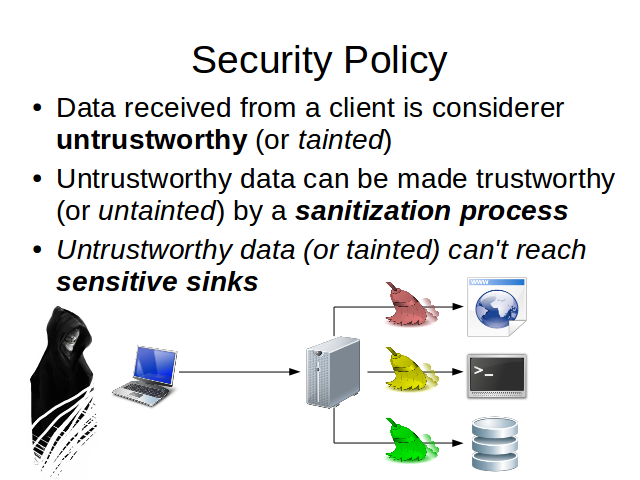
For example, look a this chunk of data. If it's used in the where clause of an SQL query and that query says something like: delete all rows from table X where id equals to VALUE, then all the rows will be deleted. But if the VALUE is used to generate a web page, it's harmless.
Something similar happens with this code. If it's used as is it to render a web page, a message will pop-up and we'll have in front of our eyes an XSS vulnerability. Again, if the chunk of data finish in a logging process on the operating systems, it would be harmless.
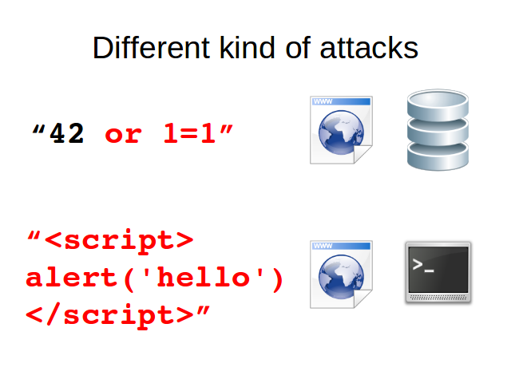
Taint analysis can be performed in two ways. Dynamic or static.
Dynamic analysis is usually implemented as a Monitor and have the advantage to produce less false alarms that static analysis. Its main drawbacks are the overhead produced (because the program and the monitors runs at the same time) and the need to modify the interpreter in order the achieve the desire behavior.
On the other hand, static analysis produce no overhead because it analyze the text of the program without need to run it and no modification of the interpreter is needed. A mayor disadvantage is that they usually generate more false alarms than Monitors.
Our approach is a library written in Python where no interpreter modification is needed, so we solve one of the monitors drawbacks.
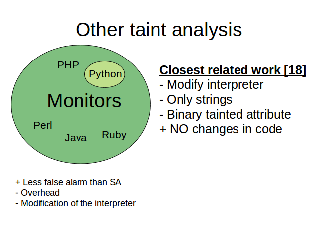
In order to implement Taint Analysis, several tasks need to be performed.
We need a way to identify untrusted inputs, sanitization functions and sensitive sinks. They can be marked in the source code using some syntax or described in a configuration file.
Data must be untainted after a sanitization process.
Detect when tainted data reaches sensitive sinks
And the hardest one, propagate taint information on the program
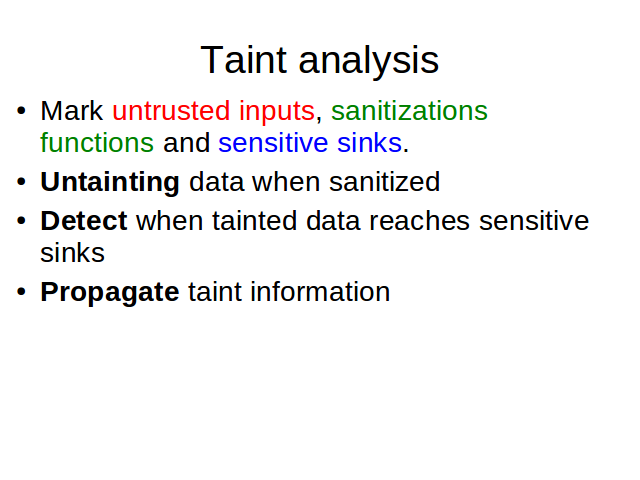
I'll show you an example of what I mean with taint propagation.
Suppose a is tainted because we receive it from the outside and b is clean because it was generated inside the program. Then, a concatenated with b need to be tainted too.
We also want taint propagation to take place when we do: a eight times, get an slice of a, use a for string formatting or apply to a any of its methods.
With all these concepts in mind, we can now see the implementation details of our library.
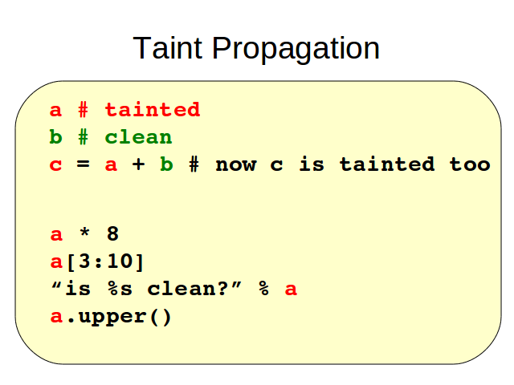
We wrap python built-in types for 2 reasons: 1) in order to add a taints attribute which contains the tags identifying the taints an object has in certain moment.
And 2) to overload its methods in order to make them work in this way: if any of the method arguments is tainted or the object that receive the message is tainted, then the resulting object should be tainted too.
It's important to mention that our implementation support tainting of different types, while other only works with strings and that we provide tags to identify different kind of taints while other only use a boolean tag: tainted or not tainted.
In addition, to improve the taint propagation mechanism we also provide taint aware functions to replace some Python built-in functions. For example, len, which applied to a string, returns its length. If the original string is tainted, the resulting integer will be tainted too.
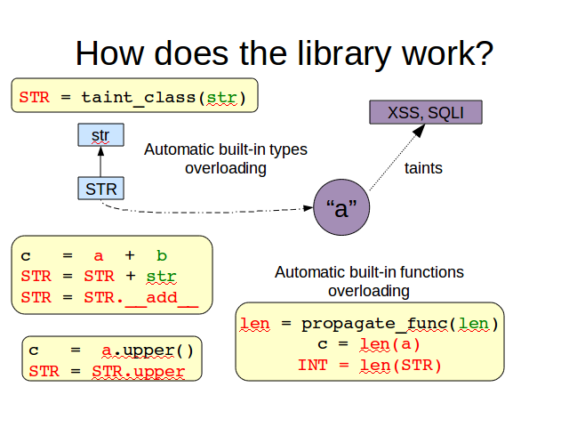
We use decorators to mark untrusted sources, sensitive sinks and sanitization functions. Decorators are a Python abstraction that let us add certain behavior to functions, methods or classes.
For example, untrusted is the decorator used to mark a function as an untrusted source. We can apply it using a regular function call or, if we have access to the definition of the function we want to decorate, using Python's syntactic sugar for this.
The behavior added by this decorator is: mark every object returned by the function as tainted; and tainted with all the possible tags. Because we don't know which kind of attack could be hidden behind it.
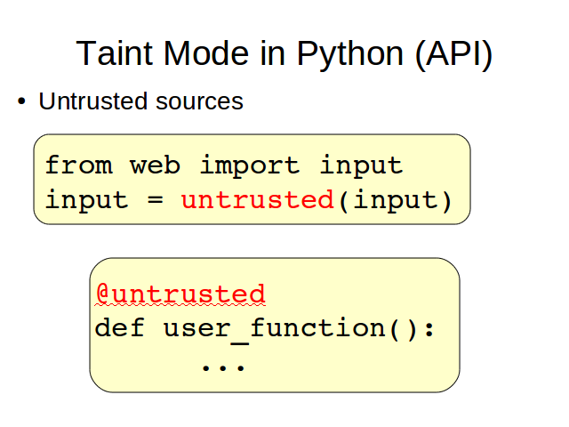
The second kind of decorator provided let the programmer specify which elements of his programs are considerer sensitive sinks. A difference with the previous one is that here we need to explicitly say which kind of attack the sink is sensitive to. We do it providing a parameter to the decorator. In the first example, an appropriate one would be SQLI.
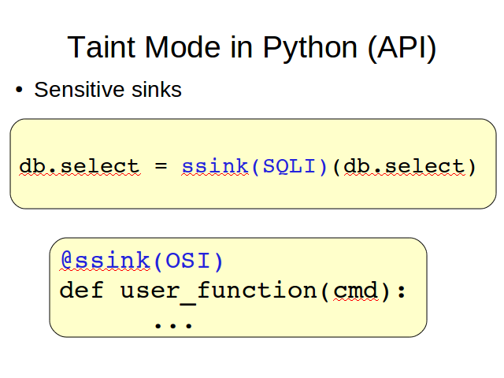
The third kind of element we need to mark are the sanitization functions. Again, we need to specify which kind of taint they are able to clean.
These are the principal decorators but others are provided as variations of the ones presented here.
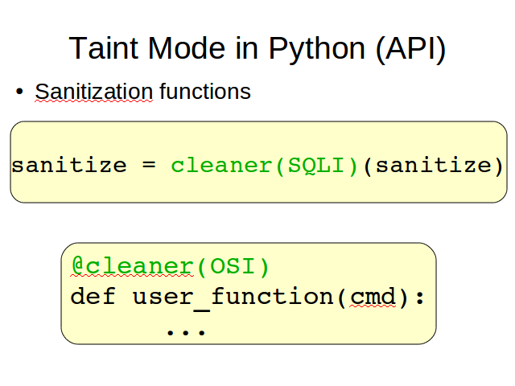
Now, we'll see a little demo of a web application.
note: the example shown can be downloaded from http://svn.juanjoconti.com.ar/dyntaint/trunk/webdemo/
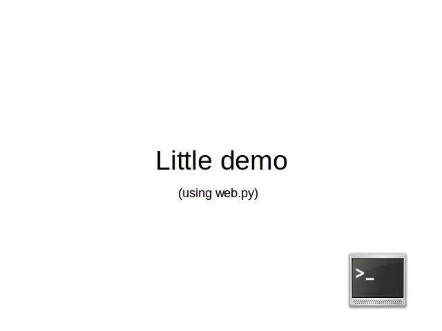
Finally, the main conclusion of this work is that it's possible to provide a lightweight taint analysis library for python with NO interpreter modification needed.
Future works could address us to make similar implementations in other languages and evaluate it in popular web applications; in order to achieve this, the library must be integrated with some web frameworks or in a platform like Google App Engine.
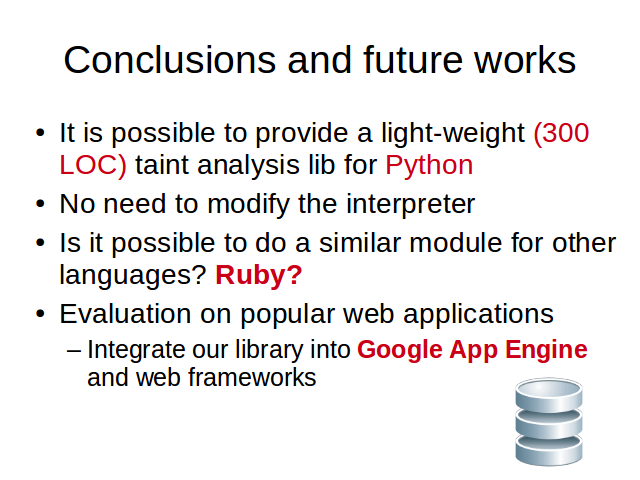
More information on the library can be found in the presented paper. It can be downloaded from the author's web sites.
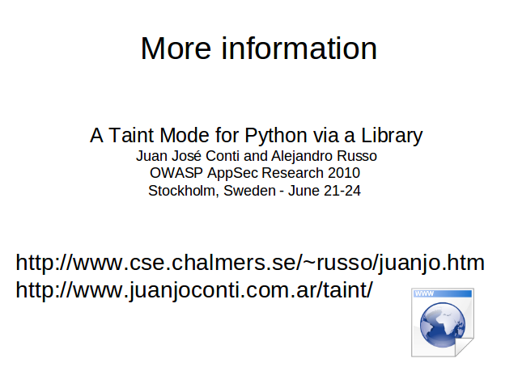

{kind=link}
{kind=link}
{kind=link}
{kind=link}
{kind=link}
{kind=link}
{kind=link}
{kind=link}
{kind=link}
{kind=link}
{kind=link}
{kind=link}
{kind=link}
{kind=link}
{kind=link}
{kind=link}
{kind=link}
{kind=link}
{kind=link}